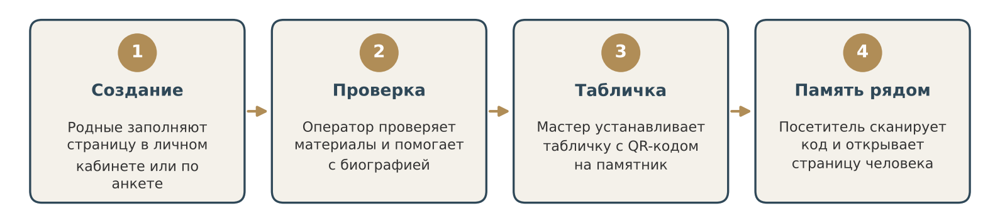
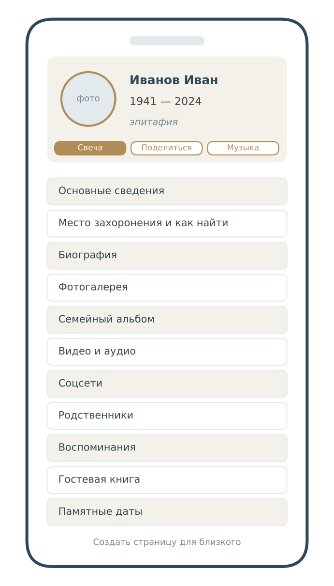
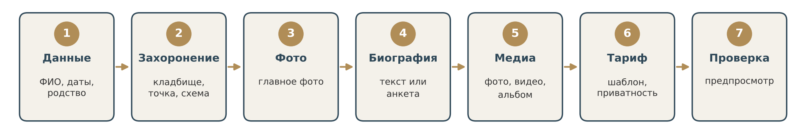
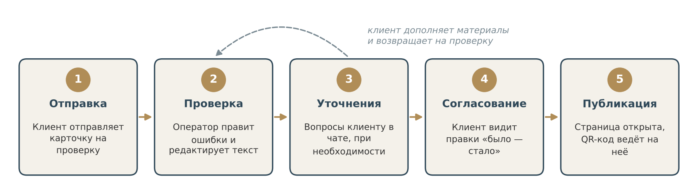

Здравствуйте, Кирилл!
Направляю техническое задание на портал страниц памяти с QR-кодами на памятниках. Я собрал в нём то, что нужно для запуска в Курске и первых продаж: страницы памяти, личный кабинет для родных, три тарифа, приём оплаты, заказ табличек и административную панель, в которой вы сами управляете ценами, текстами и заказами.
Перед тем как сесть за ТЗ, я изучил похожие сервисы в России и за рубежом. Сама идея уже доказала, что она нужна людям: семьи заказывают такие страницы, чтобы сохранить фотографии, историю и голос близкого человека и дать возможность увидеть их прямо у могилы. В Курске такой услуги с аккуратно оформленными страницами и местной установкой табличек пока нет, и у вас есть возможность занять это место первыми.
Что вы получаете по этому ТЗ:
- готовый к продажам портал с онлайн-оплатой по СБП и картам, включая зарубежные карты для родных, которые живут далеко;
- простой пошаговый мастер создания страницы, с которым справится и пожилой человек;
- бесплатный тариф, который приводит людей на портал и постепенно переводит их на платные;
- страницы памяти, которые сами приводят новых клиентов: родные оставляют воспоминания, делятся ссылкой в мессенджерах и заказывают страницы для своих близких;
- промокоды для мастерских памятников и ритуальных агентств с учётом продаж, чтобы вы сразу могли договариваться о сотрудничестве;
- аналитику с первого дня: вы видите, откуда приходят клиенты и сколько приносит каждый источник.
Портал проектируется с запасом на рост. Когда вы решите выйти за пределы Курска или добавить новые возможности, их можно будет достраивать на готовую основу без переделки того, что уже работает. Домен оформляется на вас, серверы размещаются в России.
Два формата работы. Первый: я передаю вам готовый портал полностью, вместе с кодом, сервером и всеми доступами, и дальше вы сопровождаете его сами или с любым подрядчиком. Второй: я разрабатываю портал и дальше веду его как платформу под ключ: размещаю, обновляю, слежу за безопасностью и резервными копиями и дорабатываю его по мере роста вашего бизнеса. Во втором формате вы занимаетесь только продажами, а данные ваших клиентов можно выгрузить в любой момент. Условия каждого формата обсуждаемы, и мы подберём тот, который лучше подойдёт под ваши задачи.
Мне важно, чтобы проект начал приносить деньги как можно раньше, поэтому в ТЗ вошло только то, что работает на запуск и первые продажи. Так мы быстрее выйдем на рынок и станем развивать портал уже по отзывам первых клиентов.
Что дальше. Посмотрите, пожалуйста, ТЗ и напишите, что оставить, что поправить и какие цены тарифов вы планируете. Буду ждать вашей обратной связи, после согласования обсудим следующие шаги.
Техническое задание (предварительное)
Первый этап(предварительное)
1. Назначение портала
Портал хранит страницы памяти об умерших людях. Клиент создаёт страницу с биографией, фото, видео и аудио и заказывает табличку с QR-кодом на памятник. Посетитель кладбища сканирует код телефоном и открывает страницу человека. Все материалы перед публикацией проверяет и дорабатывает оператор портала.
География: Курск. Таблички изготавливает и устанавливает команда портала, справочник кладбищ содержит кладбища Курска. Создать страницу и получить цифровой QR-код можно из любого города.
Аудитория: родственники умерших, в том числе пожилые люди, и их близкие, которые посещают страницы. Отсюда главные требования к интерфейсу: простота, крупный шрифт, спокойное оформление, удобство на телефоне.
Как портал зарабатывает: платные тарифы, изготовление и установка табличек, страницы родственников по семейной цене.

2. Роли пользователей
| Роль | Кто это | Что может делать |
|---|---|---|
| Посетитель | Человек, который отсканировал QR-код или перешёл по ссылке | Смотреть открытые страницы, искать по имени, оставлять записи в гостевой книге, добавлять воспоминания по приглашению, подписываться на обновления, делиться ссылкой |
| Клиент | Родственник, который создал страницу | Заполнять карточку, загружать материалы, выбирать и оплачивать тариф, заказывать табличку, настраивать приватность, одобрять записи гостей и воспоминания, создавать страницы родственников |
| Оператор | Сотрудник портала | Проверять и редактировать материалы, переписываться с клиентом, публиковать страницы, вести заказы табличек, разбирать жалобы |
| Администратор | Владелец проекта | Всё, что у оператора, плюс цены и тарифы, промокоды, сотрудники, справочники, тексты сайта и писем, отчёты |
3. Тарифы
Клиенту доступны три тарифа. Цены и лимиты заказчик меняет в административной панели без участия разработчика. Цифры ниже — предложение для старта.
| Что входит | Бесплатный | Базовый | VIP |
|---|---|---|---|
| ФИО, даты и места рождения и смерти, место захоронения | ✓ | ✓ | ✓ |
| Фото захоронения | 1 фото | до 10 фото | до 10 фото |
| Схема, как найти захоронение | точка на карте и маршрут | точка, маршрут, схема пути от входа, фото ориентиров | то же, схему составляет мастер при установке |
| Фотографии человека | главное фото + до 5 | до 100 | без ограничений (в пределах 10 ГБ) |
| Семейный альбом | — | до 100 фото, разделы по поколениям и событиям | без ограничений (в пределах 10 ГБ) |
| Биография | до 1 500 знаков | до 15 000 знаков, разделы по этапам жизни | без ограничений, лента времени жизни |
| Видео и аудио | — | до 5 видео и 10 аудиозаписей | без ограничений (в пределах 10 ГБ) |
| Ссылки на соцсети человека | — | да, с согласия клиента | да, с согласия клиента |
| Гостевая книга, виртуальные цветы и свечи | ✓ | ✓ | ✓ |
| Воспоминания родных по приглашению | ✓ | ✓ | ✓ |
| Подписка посетителей на новости страницы | — | ✓ | ✓ |
| Оформление страницы | 4 стандартных шаблона для каждой категории: мужчина, женщина, мальчик, девочка | выбор из расширенного набора шаблонов, конфессиональные символы | индивидуальное оформление, короткий адрес страницы |
| Проверка и редактура оператором | проверка и исправление ошибок | редактура биографии, сборка текста по анкете | закреплённый редактор, публикация в день обращения |
| Табличка с QR-кодом | цифровой QR-код для самостоятельной печати, табличка за доплату | табличка включена | две таблички премиум-качества и установка |
| Реклама на странице | нет | нет | нет |
| Срок хранения | на весь срок работы сервиса | на весь срок работы сервиса | на весь срок работы сервиса |
| Оплата | 0 ₽ | разово, цена согласуется | разово, цена согласуется |
Смена тарифа. Клиент повышает тариф в любой момент и доплачивает разницу. При попытке загрузить материал сверх лимита портал предлагает перейти на следующий тариф. Уже загруженные материалы сохраняются.
Страницы родственников. На вторую и следующие платные страницы одного клиента действует семейная скидка, процент задаёт администратор. Для общего захоронения можно заказать одну табличку: её QR-код ведёт на страницу семьи со ссылками на страницы каждого человека.
4. Страница памяти
Страницу чаще всего открывают с телефона на кладбище, поэтому она делается в первую очередь под мобильный экран и медленный интернет. Оформление спокойное, без рекламы и всплывающих окон.
Блоки страницы (сверху вниз):
- Шапка: главное фото, ФИО, годы жизни, эпитафия, кнопки «Зажечь свечу», «Поделиться», «Включить музыку».
- Основные сведения: даты и места рождения и смерти, профессия, награды.
- Место захоронения: кладбище, участок, номер могилы, фото памятника и общего вида места.
- Как найти: точка на карте с кнопкой «Проложить маршрут» (Яндекс Карты, 2ГИС), схема пути от входа на кладбище, фото ориентиров, описание словами. Схема рисуется в простом редакторе поверх спутникового снимка или загружается картинкой. Точку можно поставить по геолокации телефона, стоя у могилы.
- Биография: сплошным текстом или по этапам жизни, в VIP с лентой времени.
- Фотогалерея человека с альбомами и подписями, просмотр на весь экран.
- Семейный альбом (базовый и VIP): общие фотографии семьи, свадьбы, праздники, встречи нескольких поколений. Фото разложены по разделам (поколения, события или годы), у каждого снимка подпись, год и отметки, кто изображён, со ссылками на страницы родных на портале. Для альбома можно выбрать отдельный режим доступа: открыт всем или только по ссылке.
- Видео и аудио: семейные записи, голос человека.
- Соцсети (базовый и VIP): ссылки на страницы человека во ВКонтакте, Одноклассниках, Telegram, YouTube, RuTube, Дзене и на личный сайт. Блок появляется на странице после того, как клиент отдельной галочкой подтвердил согласие на публикацию ссылок, дата согласия сохраняется. Клиент может в любой момент снять галочку, и блок сразу скрывается. Кнопки со значком сети, сеть определяется по адресу ссылки. Раз в месяц портал проверяет, что ссылки работают. На бесплатном тарифе блок недоступен.
- Родственники: ссылки на страницы родных на портале.
- Воспоминания родных и друзей.
- Гостевая книга: соболезнования, счётчик свечей и цветов.
- Памятные даты: день рождения, день памяти, 9-й и 40-й день, годовщина.
- Подвал: спокойная строка «Создать страницу памяти для своего близкого» и кнопка «Удалить меня со страницы» для людей, которые есть на фото или в тексте. Владелец VIP-страницы может скрыть строку о создании страницы.

Приватность. Владелец выбирает режим: открытая (есть в поиске портала и в Яндексе), по ссылке (открывается по QR-коду и прямой ссылке), закрытая (по паролю или приглашению). Отдельные блоки можно скрыть от посторонних.
Поиск по ФИО, годам жизни, городу и кладбищу среди открытых страниц:
- в поиск портала и в Яндекс попадают только страницы, которые владелец сделал открытыми; при смене режима страница сразу убирается из поиска портала и закрывается от индексации;
- в результатах показываются ФИО, годы жизни, главное фото и кладбище; имена родственников, контакты владельца, участок и номер могилы видны только на самой странице;
- когда ничего не найдено, показывается спокойное предложение «Страницы пока нет. Вы можете создать её сами, это бесплатно» с кнопкой, введённые ФИО и годы переносятся в мастер создания страницы;
- запросы без результатов сохраняются и видны в админ-панели со сводкой по кладбищам и периодам;
- защита от массового сбора данных: ограничение числа запросов с одного адреса, капча при подозрительной активности (Яндекс SmartCaptcha), без выгрузки списков и без открытого API;
- страницы детей по умолчанию создаются в режиме «по ссылке», открытый режим включается только явным выбором владельца.
В мастере создания страницы взрослого открытый режим стоит первым с пояснением, что так родные и знакомые смогут найти человека. Выбор остаётся за клиентом.
Фоновая музыка. На всех страницах играет тихий плейлист портала из библиотеки, которую ведёт администратор. Музыка включается после первого касания или кнопкой, выбор посетителя сайт запоминает. Плеер: пауза, следующий трек, выключение звука, громкость. При просмотре видео музыка ставится на паузу. Владелец может отключить музыку на своей странице.
Подписка на новости страницы (базовый и VIP). Посетитель нажимает «Подписаться» и получает уведомления о новых фото, видео, воспоминаниях и памятных датах на почту, по SMS или в мессенджере (Telegram, MAX, ВКонтакте), сразу или раз в неделю. Отписка в один клик.
Поделиться. Кнопки для ВКонтакте, Telegram, Одноклассников, MAX и WhatsApp. При отправке ссылки показывается превью с фото, именем и годами жизни.
5. Личный кабинет клиента
Интерфейс рассчитан на пожилых людей: крупный шрифт, простые шаги, подсказки на каждом шаге.
Регистрация и вход: по номеру телефона (код в SMS), по электронной почте, через VK ID и Яндекс ID. При регистрации две отдельные галочки: согласие на обработку персональных данных и принятие оферты. Обе по умолчанию не отмечены, дата, время и версия текста сохраняются в базе.
Мастер создания страницы:
- Основные данные: ФИО, пол, даты и места рождения и смерти, степень родства клиента. По полу и возрасту портал подбирает категорию шаблона.
- Место захоронения: кладбище из справочника, участок, точка на карте, фото захоронения, схема и описание пути.
- Главное фото с кадрированием.
- Биография: свободный текст или анкета из вопросов («Где прошло детство?», «Кем работал?», «Чем запомнился близким?»). По ответам оператор собирает черновик биографии.
- Медиа: фото, видео, аудио и документы с подписями и годом; на платных тарифах семейный альбом и ссылки на соцсети с отдельной галочкой согласия на их публикацию.
- Выбор тарифа, шаблона оформления и режима приватности.
- Предпросмотр и отправка на проверку.

Черновик сохраняется автоматически, к заполнению можно вернуться в любой день.
Загрузка материалов: форматы JPG, PNG, HEIC, WEBP, MP4, MOV, MP3, M4A, WAV, PDF; несколько файлов сразу прямо с телефона; продолжение загрузки при обрыве связи; сжатие для показа на сайте с хранением оригинала.
Статусы страницы: черновик; на проверке; нужны уточнения; опубликована; изменения на проверке (на сайте прежняя версия); скрыта.
Ещё в кабинете:
- список своих страниц и кнопка «Добавить страницу родственника»;
- ссылка «Поделиться воспоминанием» для родных: по ней можно добавить воспоминание и фото без регистрации, материал проходит проверку и одобрение владельца;
- подсказка, что ещё можно добавить на более высоком тарифе;
- чат с оператором;
- история изменений страницы с возможностью вернуть прежнюю версию;
- одобрение записей гостевой книги и воспоминаний;
- статус заказа таблички, счета и чеки;
- выгрузка архива всех материалов страницы;
- удаление аккаунта и данных.
6. Проверка и публикация материалов
Каждая страница и каждое её изменение проходят проверку оператора до показа посетителям.
Порядок:
- Клиент отправляет карточку на проверку.
- Оператор проверяет материалы, правит ошибки, редактирует биографию в рамках тарифа.
- При замечаниях оператор пишет клиенту в чат и переводит страницу в статус «нужны уточнения».
- Клиент видит правки оператора в режиме «было — стало» и согласует итоговую версию.
- Оператор публикует страницу, QR-код начинает вести на неё.

Что не публикуется: материалы, запрещённые законом; оскорбления и нецензурная лексика; фото и видео со сценами насилия, телами умерших, откровенными сценами; телефоны, адреса и документы живых людей; реклама и спам; чужие материалы, на которые у клиента нет прав. Полный список администратор ведёт в панели.
Право создать страницу. По умолчанию клиент загружает документ о родстве или захоронении. Документы видит только оператор, они хранятся в зашифрованном виде и удаляются через срок, заданный администратором. В особых случаях оператор принимает страницу без документов с выбором причины из справочника.
Гостевая книга и воспоминания. Записи посетителей публикует владелец страницы, защита от спама работает автоматически. Любой посетитель может пожаловаться на страницу, жалоба попадает оператору.
Сроки проверки: бесплатный тариф — до 3 рабочих дней, базовый — до 1 рабочего дня, VIP — в день обращения.
История изменений. По каждому действию в базе сохраняется, кто и когда его совершил, что было до и после, решение и его причина. Записи нельзя править. По запросу человека об удалении данных его персональные данные в записях обезличиваются.
7. QR-коды и таблички
Каждая страница получает постоянный QR-код в момент создания. Код ведёт на короткую ссылку портала, ссылка перенаправляет на страницу. Так табличка продолжает работать при смене адреса страницы или переезде портала на другой сервер.
Требования к QR-коду:
- коррекция ошибок уровня H, код читается при повреждении до 30% поверхности;
- под кодом короткая ссылка для ручного ввода;
- каждое сканирование считается, владелец видит статистику посещений;
- до публикации код ведёт на заглушку с именем и годами жизни;
- владелец скачивает код в PNG и SVG.
Варианты табличек: металлическая с лазерной гравировкой на клеевой основе (на памятник и колумбарную плиту), керамическая (в стиле фотокерамики), на колышке (временная, до установки памятника). Список вариантов и цены администратор меняет в панели.
Заказ в кабинете:
- Клиент выбирает тип таблички, размер и надпись, видит макет на экране.
- Выбирает способ получения: установка мастером на кладбище в Курске или самовывоз.
- Оплачивает заказ.
- Следит за статусом: принят → в производстве → готов → установлен. При установке мастер прикладывает фото таблички на памятнике.

Заказать табличку можно до того, как страница заполнена: родные часто заказывают её вместе с памятником и заполняют страницу позже.
8. Оплата и уведомления
Приём оплаты подключается через одного российского платёжного агрегатора (ЮKassa или Робокасса, выбор за заказчиком). Способы оплаты:
- СБП, показывается первым как самый выгодный для портала по комиссии;
- банковские карты МИР, Visa, Mastercard российских банков;
- SberPay и T-Pay;
- карты Visa и Mastercard зарубежных банков, для родственников за границей;
- оплата по счёту для юридических лиц.
Электронный чек отправляется покупателю автоматически после каждой оплаты. Возврат денег оформляется из админ-панели в несколько нажатий, чек возврата формируется сам. Данные карт хранятся только у платёжного агрегатора.
Промокоды и сертификаты. Администратор создаёт промокоды на скидку в рублях или процентах, со сроком действия и лимитом использований. Отдельный вид промокодов выдаётся мастерским по изготовлению памятников, по каждому такому коду в панели виден отчёт о продажах. Подарочный сертификат на тариф покупается на сайте и приходит на почту в виде красивой открытки с кодом.
Уведомления приходят по email, SMS и в мессенджерах (Telegram, MAX, ВКонтакте), канал выбирает сам клиент. Поводы для уведомлений:
- смена статуса страницы и заказа таблички;
- вопрос или замечание оператора;
- новая запись в гостевой книге или новое воспоминание на проверку;
- новый материал на странице для подписчиков.
Письма клиенту: серия из трёх писем после публикации бесплатной страницы с рассказом о возможностях платных тарифов; одно напоминание о незавершённом черновике; письма к памятным датам по календарю (Радоница, родительские субботы, 9 Мая, день рождения и день памяти человека). Тексты и расписание писем редактируются в админ-панели. Рекламные письма уходят только тем, кто поставил отдельную галочку согласия на них.
9. Сайт, поиск и аналитика
Главная страница: понятное описание сервиса и того, как он работает; примеры страниц памяти; тарифы с ценами; фото установленных табличек; ответы на частые вопросы; отзывы; кнопка заказа на первом экране и внизу страницы.
Поисковое продвижение под Яндекс и Google:
- понятные адреса страниц;
- заголовок, описание и главный заголовок каждой страницы редактируются в админ-панели;
- карта сайта и файл robots.txt формируются автоматически;
- микроразметка Schema.org для страниц памяти, статей и организации;
- подключение Яндекс Вебмастера и Google Search Console;
- открытые страницы памяти индексируются поисковиками, закрытые и доступные по ссылке скрыты от индексации.
Справочник кладбищ Курска. На каждое кладбище своя страница с адресом, картой, режимом работы и списком открытых страниц памяти. Такие страницы приводят людей из поиска.
Раздел статей для полезных материалов (как ухаживать за памятником, как подготовиться к памятной дате и т. п.) с редактором в админ-панели.
Посадочные страницы. Администратор собирает новую посадочную страницу под рекламную кампанию или партнёра из готовых блоков, без программиста.
Аналитика:
- Яндекс Метрика с вебвизором на всех страницах;
- цели: просмотр тарифов, начало оформления, регистрация, оплата, заказ таблички, нажатие «поделиться»;
- UTM-метки, источник перехода и промокод сохраняются в карточке клиента и заказа;
- сводка в админ-панели: заказы, выручка, конверсия по шагам, источники клиентов за выбранный период.
10. Административная панель
Доступ к панели у операторов и администраторов, права настраиваются по ролям. Разделы панели:
- Очередь проверки: новые страницы и изменения, с сортировкой по сроку и тарифу;
- Жалобы от посетителей и запросы на удаление со страницы;
- Страницы памяти: поиск, просмотр, редактирование, смена статуса и тарифа;
- Заказы табличек: статусы, назначение мастера, фото установки;
- Клиенты: карточка клиента с заказами, оплатами, перепиской и источником;
- Тарифы и цены, варианты табличек;
- Промокоды и сертификаты с отчётами;
- Справочники: кладбища, причины отказа, шаблоны оформления, музыкальная библиотека, список запрещённого контента;
- Тексты писем и уведомлений;
- Контент сайта: главная страница, статьи, посадочные страницы, частые вопросы;
- Сотрудники и роли;
- История изменений с фильтрами и выгрузкой в Excel;
- Отчёты: выручка, заказы, конверсия, источники, работа операторов (сколько страниц проверено и за какое время).
11. Что нужно от заказчика для старта
- Цены тарифов и табличек.
- Название сервиса и доменное имя.
- Реквизиты юридического лица или ИП для оферты, чеков и платёжного агрегатора.
- Логотип и фирменные цвета, при их отсутствии мы подготовим варианты.
- Музыкальная библиотека для страниц, на которую у заказчика есть права.
- Тексты оферты, политики обработки персональных данных и согласий.
- Список кладбищ Курска для справочника.
- Договорённости по изготовлению табличек: материалы, поставщик заготовок, сроки.
- Аккаунт в выбранном платёжном агрегаторе.
- Контактное лицо для оперативных согласований.